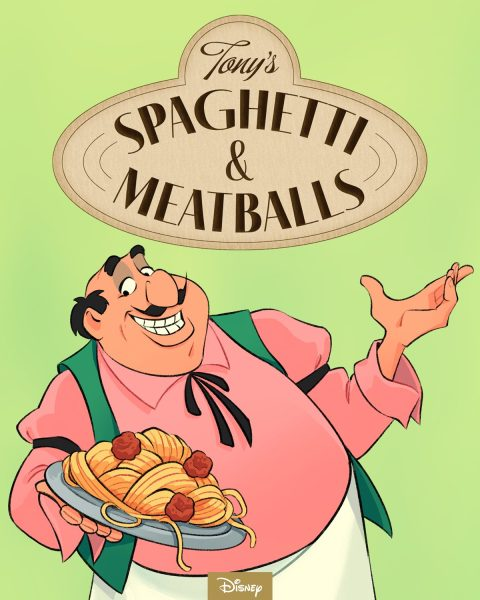
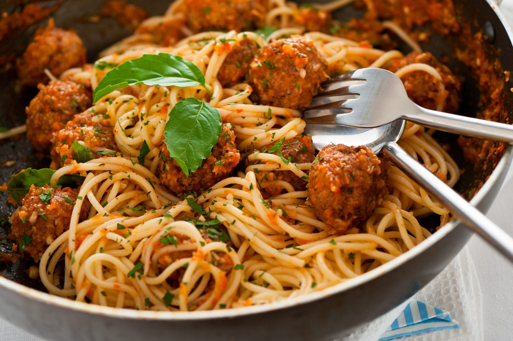

Tony’s Spaghetti and Meatballs from Lady and the Tramp and

Description
Who doesn't remember the scene of these two little dogs eating the same spaghetti without putting their snouts together? To prepare them you can do it all homemade by making from scratch the tomato sauce and the meatballs.
Ingredients
For the meatballs:
- 1 pound of ground beef
- 1 egg
- 1/3 cup bread crumbs
- Onion powder
- Salt
- Pepper
For the sauce:
- 1 can of crushed tomatoes
- 1/2 onion, chopped
- 2 garlic cloves, chopped
- 1 tablespoon of oregano
- 1 tablespoon of olive oil
Instructions
- Preheat the oven to 400° for your meatballs.
- Bring a large pot of water to a boil and cook your pasta until it is al dente.
- In a bowl, combine your beef, egg, and bread crumbs. Add the onion powder, salt, and pepper, then mix.
- Shape your meat into balls, then place them on a nonstick baking sheet. Bake them until they are brown.
- In a pot over medium heat, add your olive oil, and chopped onion and garlic. Sauté until soft. Then, pour in your crushed tomatoes and bring to a simmer.
- Take your drained pasta and mix with the sauce. Place your desired number of meatballs on top, and enjoy!
- And, that’s it! Just follow these steps and you’ll be ready to push a meatball across the table with your nose in no time!
Result
